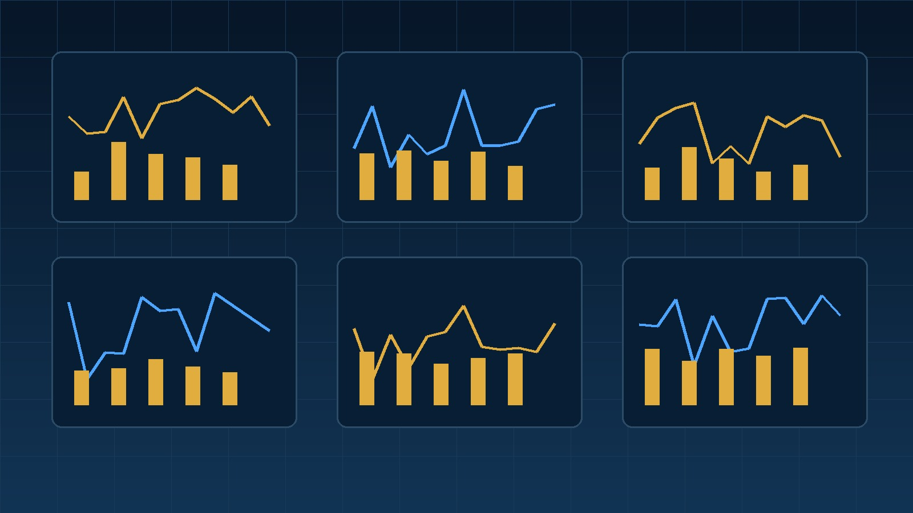

CPI 뜻을 초보자 기준으로 쉽게 이해할 수 있도록 CPI 개념, 물가상승률, 금리연결, 시장기대치, 성장주 영향, 채권시장, 확인방법 순서로 정리한 시장지표·경제 가이드입니다.
1. CPI 개념 이해하기
CPI 개념은(는) CPI 뜻을 이해할 때 중요한 확인 요소입니다. 경제지표와 시장지표는 발표된 숫자 자체보다 시장 예상치와 이전 수치를 함께 비교해 해석하는 것이 중요합니다. 같은 지표라도 경기 국면, 금리 수준, 기업 실적 전망에 따라 주식시장의 반응이 달라질 수 있습니다. 따라서 하나의 지표만 보고 투자 판단을 내리기보다 기업 실적, 금리, 환율, 수급을 함께 확인하는 것이 좋습니다.
2. 물가상승률 이해하기
물가상승률은(는) CPI 뜻을 이해할 때 중요한 확인 요소입니다. 경제지표와 시장지표는 발표된 숫자 자체보다 시장 예상치와 이전 수치를 함께 비교해 해석하는 것이 중요합니다. 같은 지표라도 경기 국면, 금리 수준, 기업 실적 전망에 따라 주식시장의 반응이 달라질 수 있습니다. 따라서 하나의 지표만 보고 투자 판단을 내리기보다 기업 실적, 금리, 환율, 수급을 함께 확인하는 것이 좋습니다.

3. 금리연결 이해하기
금리연결은(는) CPI 뜻을 이해할 때 중요한 확인 요소입니다. 경제지표와 시장지표는 발표된 숫자 자체보다 시장 예상치와 이전 수치를 함께 비교해 해석하는 것이 중요합니다. 같은 지표라도 경기 국면, 금리 수준, 기업 실적 전망에 따라 주식시장의 반응이 달라질 수 있습니다. 따라서 하나의 지표만 보고 투자 판단을 내리기보다 기업 실적, 금리, 환율, 수급을 함께 확인하는 것이 좋습니다.
4. 시장기대치 이해하기
시장기대치은(는) CPI 뜻을 이해할 때 중요한 확인 요소입니다. 경제지표와 시장지표는 발표된 숫자 자체보다 시장 예상치와 이전 수치를 함께 비교해 해석하는 것이 중요합니다. 같은 지표라도 경기 국면, 금리 수준, 기업 실적 전망에 따라 주식시장의 반응이 달라질 수 있습니다. 따라서 하나의 지표만 보고 투자 판단을 내리기보다 기업 실적, 금리, 환율, 수급을 함께 확인하는 것이 좋습니다.
5. 성장주 영향 이해하기
성장주 영향은(는) CPI 뜻을 이해할 때 중요한 확인 요소입니다. 경제지표와 시장지표는 발표된 숫자 자체보다 시장 예상치와 이전 수치를 함께 비교해 해석하는 것이 중요합니다. 같은 지표라도 경기 국면, 금리 수준, 기업 실적 전망에 따라 주식시장의 반응이 달라질 수 있습니다. 따라서 하나의 지표만 보고 투자 판단을 내리기보다 기업 실적, 금리, 환율, 수급을 함께 확인하는 것이 좋습니다.

6. 채권시장 이해하기
채권시장은(는) CPI 뜻을 이해할 때 중요한 확인 요소입니다. 경제지표와 시장지표는 발표된 숫자 자체보다 시장 예상치와 이전 수치를 함께 비교해 해석하는 것이 중요합니다. 같은 지표라도 경기 국면, 금리 수준, 기업 실적 전망에 따라 주식시장의 반응이 달라질 수 있습니다. 따라서 하나의 지표만 보고 투자 판단을 내리기보다 기업 실적, 금리, 환율, 수급을 함께 확인하는 것이 좋습니다.
7. 확인방법 이해하기
확인방법은(는) CPI 뜻을 이해할 때 중요한 확인 요소입니다. 경제지표와 시장지표는 발표된 숫자 자체보다 시장 예상치와 이전 수치를 함께 비교해 해석하는 것이 중요합니다. 같은 지표라도 경기 국면, 금리 수준, 기업 실적 전망에 따라 주식시장의 반응이 달라질 수 있습니다. 따라서 하나의 지표만 보고 투자 판단을 내리기보다 기업 실적, 금리, 환율, 수급을 함께 확인하는 것이 좋습니다.
CPI 뜻 자주 묻는 질문 8가지
CPI 뜻은 무엇인가요?
시장과 경제의 흐름을 이해하기 위해 활용되는 기본 개념입니다.
CPI 뜻은 주식 투자에서 왜 중요한가요?
기업 실적 전망과 투자심리, 금리와 자금 흐름에 영향을 줄 수 있기 때문입니다.
CPI 뜻은 숫자가 높으면 무조건 나쁜가요?
아닙니다. 시장 예상치와 이전 수치, 경기 상황을 함께 비교해야 합니다.
CPI 뜻은 언제 확인하면 좋나요?
정기 발표 일정이나 시장 변동성이 커지는 시기에 확인하면 흐름을 이해하는 데 도움이 됩니다.
CPI 뜻과 금리는 어떤 관계가 있나요?
물가와 경기 상황에 따라 중앙은행의 금리 결정과 연결될 수 있습니다.
CPI 뜻만 보고 투자 판단을 해도 되나요?
아닙니다. 기업 실적, 재무상태, 밸류에이션과 수급을 함께 확인해야 합니다.
CPI 뜻은 국내주식과 미국주식에 모두 영향을 주나요?
글로벌 자금 흐름과 환율을 통해 국내외 시장 모두에 영향을 줄 수 있습니다.
CPI 뜻 다음에 어떤 지표를 함께 보면 좋나요?
금리, 환율, 물가, 고용과 기업 실적 관련 지표를 함께 보면 전체 흐름을 이해하기 쉽습니다.